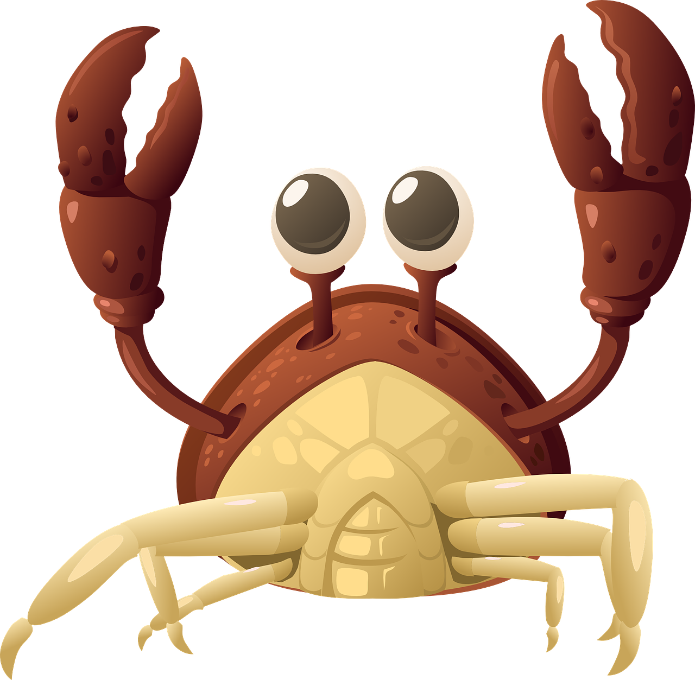

Unconfirmed reports of heavily mechanised lobsters gathering in shallow waters just north of Westport. There are some indications these large, blue and silver lobsters may be a similar variety to those that destroyed Sydney last month. West Coast residents are urged to evacuate immediately.
A grieving family are asking the public to be mindful that only the cyborg mutant lobsters are a threat, after their beloved pet Gérard (named for the French poet Gérarde de Nerval who famously kept a pet lobster) was taken from his tank after a break-in at their home.
"Gérard hated the mutant lobsters. He never did any harm to anyone," said eight year old Timmy. "Except for the people he pinched."

The last picture heartbroken Timmy has of Gerard the Lobster